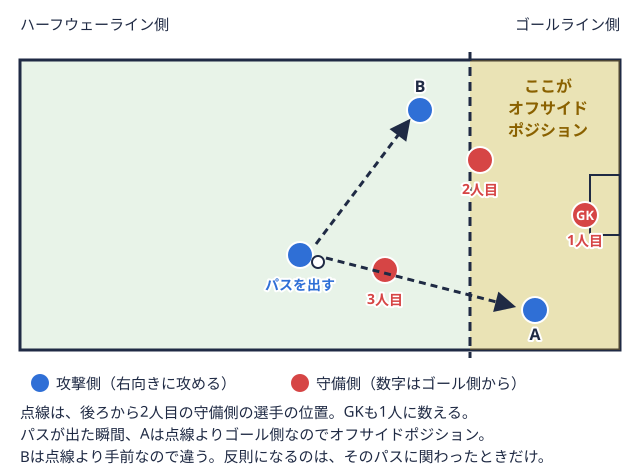

ルール解説 2026-09-22
サッカーのオフサイドルールをわかりやすく解説｜3つの条件と例外
はじめての方向け
「オフサイド攻撃側の選手が、味方がボールを蹴った瞬間に相手ゴールに近い不利な位置にいて、プレーに関わると取られる反則。 
オフサイドはなぜわかりにくいと言われるのか
オフサイドがわかりにくいと感じる大きな理由は、「オフサイドポジションにいること」と「オフサイドの反則を取られること」が別物だという点にあります。ルールの条文を読むと、まず位置に関する条件が説明され、そのあとに反則として扱われる条件が説明される構成になっているため、途中だけを聞くと混乱しやすくなります。まずはこの2段階の考え方があることを押さえておくと、以降の説明が理解しやすくなります。
オフサイドポジションの3条件
JFA公式サイトが公開している「サッカー競技規則2025/26」第11条オフサイドでは、次の条件をすべて満たす位置にいる競技者を「オフサイドポジション」にあるとしています。
- 相手競技者のハーフ（相手陣内）にいる
- ボールより相手競技者のゴールラインピッチの短い辺の境界線で、ゴールが置かれている側の線。ボールの全体が越えるとプレーが止まる。
 用語辞典で見る（ピッチの短い辺で、ゴールが置かれた側の線）に近い位置にいる
用語辞典で見る（ピッチの短い辺で、ゴールが置かれた側の線）に近い位置にいる - 後方から数えて2人目の相手競技者（多くの場合はゴールキーパーゴールを守る選手で、チームで唯一、ペナルティエリア内で手を使える。パスをつなぐ役もこなす。
 用語辞典で見ると最終ラインゴールキーパーの前で、横に並んで守る守備の選手たちの列。この位置の高さが、守り方の特徴になる。用語辞典で見るの1人）より、相手競技者のゴールラインに近い位置にいる
用語辞典で見ると最終ラインゴールキーパーの前で、横に並んで守る守備の選手たちの列。この位置の高さが、守り方の特徴になる。用語辞典で見るの1人）より、相手競技者のゴールラインに近い位置にいる
なお、この判定では頭・胴体・足の位置が基準になり、ゴールキーパーを含むすべての競技者の手や腕は判定の対象に含まれないとされています。手や腕だけが前に出ている状態は、オフサイドポジションの判断材料にはなりません。
用語辞典で見る、タッチラインピッチの長い辺の境界線。ボールの全体がこの線を越えると、スローインで再開する。用語辞典で見る、ゴールライン、ペナルティエリアゴール前にある大きな長方形の区画。ゴールを守る選手（ゴールキーパー）が手を使えるのは、この中だけ。用語辞典で見るなどの位置）「2人目の相手競技者」の数え方
最終ライン（ゴールキーパーの前で横に並んで守る選手の列）の選手をイメージするときは、ゴールキーパーも1人としてカウントする点がポイントです。ゴールキーパーが前に飛び出している場面では、フィールドプレーヤーの最終ラインだけを基準にした感覚と実際の判定がずれることがあるため、こうした場面では特に注意して見る必要があります。
オフサイドポジションにいるだけでは反則にならない
ここが誤解されやすいポイントですが、オフサイドポジションにいること自体は反則ではありません。JFA公式サイトの説明によれば、オフサイドポジションにいる競技者は、次のいずれかに該当する行為によってはじめて反則を取られるとされています。
- 味方が蹴ったり触れたりしたボールをプレーする、またはそれに触れる
- 相手の視線を遮る、相手に接触するなど、プレーに干渉する
- 上記のプレーによって利益を得る（相手のセーブやクリアの跳ね返りを含む）
つまり、味方のパスコースに入っていない選手や、プレーにまったく関与していない選手がオフサイドポジションにいるだけでは、反則の対象にはならないという整理です。この「関与しているかどうか」の判断が、映像だけでは分かりにくいと感じる理由のひとつになっています。
反則にならない主な例外
JFA公式サイトの説明では、次の3つの再開方法から直接ボールを受けた場合は、オフサイドの反則にはならないとされています。
- ゴールキック攻撃側が最後に触れたボールがゴールラインを越えたとき、守備側がゴール前の小さな区画から蹴って再開する方法。
 用語辞典で見る（守備側がゴール前の区画から蹴って再開する方法）
用語辞典で見る（守備側がゴール前の区画から蹴って再開する方法） - スローインボールがタッチラインを越えたとき、最後に触れなかった側が両手で頭の後ろから投げ入れて再開する方法。用語辞典で見る（ボールがタッチラインを越えたとき、投げ入れて再開する方法）
- コーナーキック守備側が最後に触れたボールがゴールラインを越えたとき、攻撃側がピッチの角から蹴って再開する方法。用語辞典で見る（守備側が最後に触れたボールがゴールラインを越えたとき、攻撃側がピッチの角から蹴って再開する方法）
これらのプレーから再開してすぐにボールを受ける選手がオフサイドポジションにいたとしても、この例外にあたる限りは反則を取られません。セットプレープレーが止まったあと、コーナーキックやフリーキックなど、決まった形で再開する場面からの攻撃や守備。用語辞典で見るの場面で「あれ、オフサイドじゃないの？」と感じたときは、この例外規定が関係している可能性があります。
用語辞典で見る内、ピッチの角）判定はいつのタイミングで行われるのか
オフサイドの判定で基準になるのは、「味方がボールをプレーした瞬間」の位置です。ボールを蹴った瞬間にオフサイドポジションにいたかどうかで判断されるため、パスが出たあとに選手が走り込んで最終ラインを越えた場合は、この基準には抵触しません。逆に、パスが出た瞬間にオフサイドポジションにいた選手が、いったんオンサイドの位置まで戻ってからボールに関与した場合も、待ち伏せ行為とみなされ反則になり得るという考え方が紹介されています。テレビ中継や配信でリプレーが流れる場面の多くは、この「ボールが蹴られた瞬間」を静止画で確認しているものです。
VARや近年の運用について
近年はVARビデオ映像を使って、得点や退場などの重要な判定を確認し、主審の判断を助ける仕組み。用語辞典で見る（ビデオ・アシスト・レフェリー）が導入された大会で、頭・胴体・足のわずかな位置関係まで映像で確認する運用が広がっています。JFA公式サイトでも競技規則は毎シーズン見直しが行われており、細かな運用や解釈が更新されることがあるため、最新の内容を確認したい場合はJFA公式サイトの競技規則ページを参照するのが確実です。大学サッカーの公式戦でVARが使われるかどうかは大会・カテゴリーによって異なるため、この記事では一般的な判定基準の整理にとどめます。
大学サッカーの試合でオフサイドを意識して見るポイント
ルールの基本を押さえたら、実際の試合でオフサイドの場面を意識しながら観戦してみると理解が深まります。本サイトでは関東・関西・東北・北信越の4連盟について、1部・2部それぞれの順位表や試合結果を公開しています。たとえば関西学生サッカーリーグ1部の順位表から気になるチームの試合結果ページに進み、失点・得点のシーンでDFライン（守備の選手が横に並ぶ列）がどのように上げ下げされていたかを振り返ってみると、最終ラインの管理とオフサイドの関係がイメージしやすくなります。
DFラインを高く保つチームほど、裏へのパス1本でオフサイドの判定が絡む場面が増える傾向があります。自分が所属するリーグ・チームの試合を見るときに、最終ラインの選手がどのタイミングでラインを上げているかを意識すると、オフサイドという現象が単なるルールの暗記ではなく、チーム戦術の一部として見えてくるはずです。関東・関西だけでなく、東北大学サッカーリーグ1部や北信越大学サッカーリーグ1部の試合結果でも同じ視点で振り返ってみると、リーグやチームによる最終ラインの傾向の違いに気づくこともあります。
よくある質問
ドリブルで持ち込んだ場合もオフサイドになりますか
オフサイドの反則は「味方がボールをプレーした瞬間の位置」が基準になるという考え方のため、パスを受ける場面が中心の整理です。ボールを保持したまま単独でドリブルを続けている選手自身の位置は、味方からのパスという条件にあたらないため、この整理では通常オフサイドの判定対象にはならないとされています。
副審（線審）はどうやって瞬時に判定しているのですか
副審タッチライン沿いで旗を使い、ボールが出た方向やオフサイドなどを主審に知らせる審判。用語辞典で見るは攻撃側の最終ライン付近に位置取りし、味方がボールをプレーした瞬間の攻撃側選手の位置を見極めたうえでフラッグを上げる役割を担っています。近年はVARが導入された大会で、この判定を映像面から補助する運用も広がっています。
ハーフウェーラインより自陣側にいる場合はどうなりますか
オフサイドポジションの条件には「相手競技者のハーフ（相手陣内）にいる」ことが含まれるため、自分たちの陣内にとどまっている選手は、この条件だけを見るとオフサイドポジションの対象外という整理になります。
まとめ
オフサイドは、「オフサイドポジションにいるかどうか」という位置の条件と、「その位置にいる選手がプレーに関与したかどうか」という反則の条件を分けて理解すると整理しやすくなります。ゴールキック・スローイン・コーナーキックからの直接プレーは例外にあたること、判定の基準は味方がボールをプレーした瞬間の位置であることもあわせて押さえておくと、試合観戦や自分たちの練習・ミーティングでの説明がしやすくなります。ルールの詳細は今後も見直される可能性があるため、正確な最新情報を確認したいときはJFA公式サイトの競技規則ページをあわせて参照してください。
---
出典：日本サッカー協会（JFA）公式サイト「サッカー競技規則2025/26」第11条オフサイドをもとに編集部作成
この部活・競技を応援したい方へ。
取材してほしい部活を募集中
オフシーズン・引退後に、長期インターンという選択
部活で培った力を実務で試す。16タイプ診断（30秒）で合う企業がわかります。